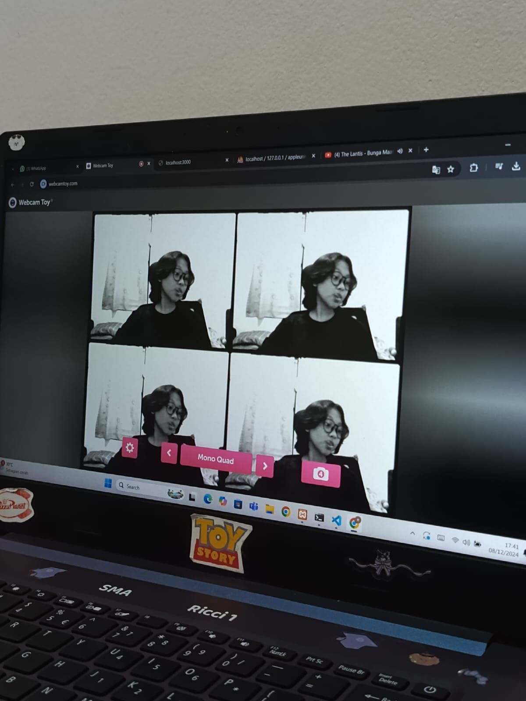

Hello! You can call me Evelly, Evell, Eve, Or Epel. I’m a technology enthusiast who loves building coding projects, experimenting with electronics, and solving real-world problems. Since July 2024, I’ve been studying Software Engineering at SMKN 1 Jakarta and actively participating in Kelompok Ilmiah Remaja (KIR), where I explore science and technology through hands-on projects.
My passion lies in innovation. I enjoy exploring Artificial Intelligence, Machine Learning, Cyber Security, and the fascinating world of electronics. Through KIR, I get to document my projects, share tech-related knowledge, and collaborate with peers who share the same interests. I’m also very active on social media, with 1000+ audience and 1M engagement on X.
Outside of tech I love listening to Katseye, JKT48, Radiohead, MCR, Oasis, Green Day, The Police, Mac DeMarco, Sunset Rollercoaster, CAS, SO7, and more check my Spotify! I also enjoy Marvel, Harry Potter, and yes I even joined a game show once lol.
Email me for any inquiries at evellykhnz@gmail.com.